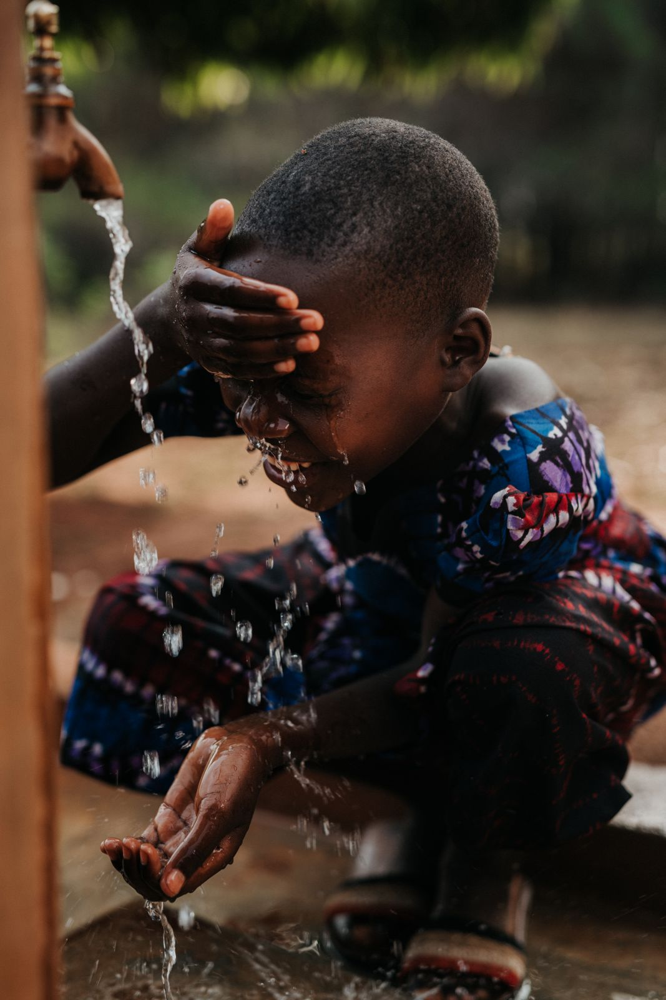

The people of Tanzania face significant challenges in accessing clean water. Many communities rely on contaminated sources, leading to health issues and limiting opportunities for education and economic growth. With your support, Charity Water has been able to implement sustainable water solutions that have transformed lives. For example, in a small village, we drilled a well that now provides clean water to over 500 people. This has led to a dramatic decrease in waterborne diseases, improved school attendance, and hope for the future.